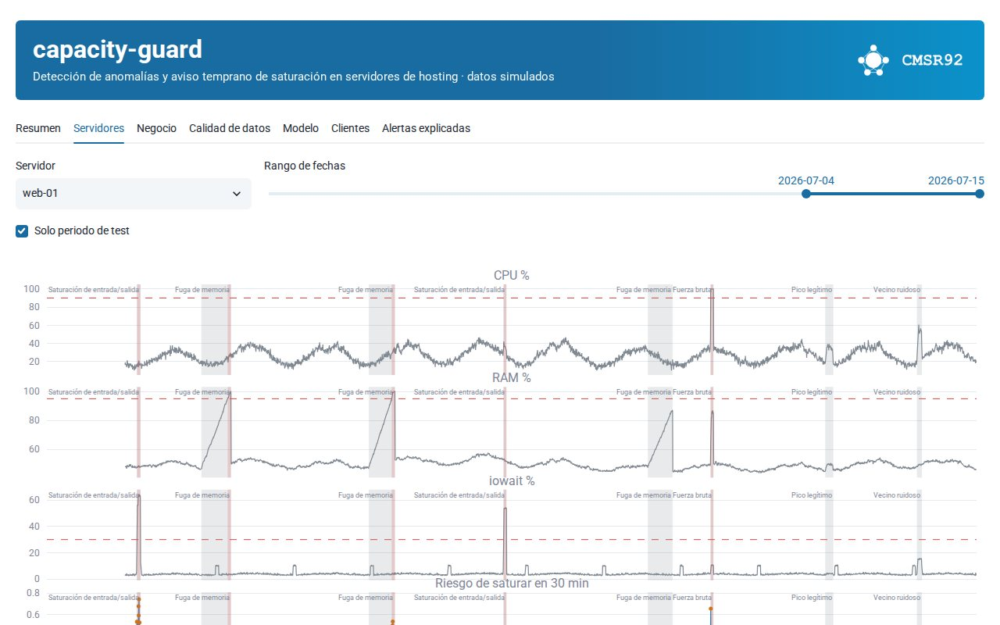

Proyecto principal

capacity-guard: aviso temprano de saturación en servidores
Detecta anomalías y estima la probabilidad de que un servidor de hosting sature en los próximos 30 minutos. Incluye ingesta con controles de calidad, cuatro métodos comparados por evento (umbral, z-score estacional, Isolation Forest y gradient boosting), diagnóstico de la causa y explicaciones de cada alarma redactadas con IA generativa bajo un guardarraíl.
103.675
Muestras analizadas
4
Métodos comparados
73
Tests automáticos